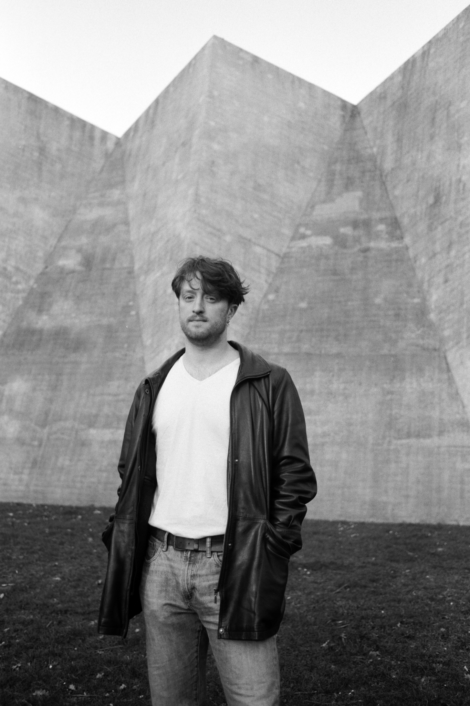
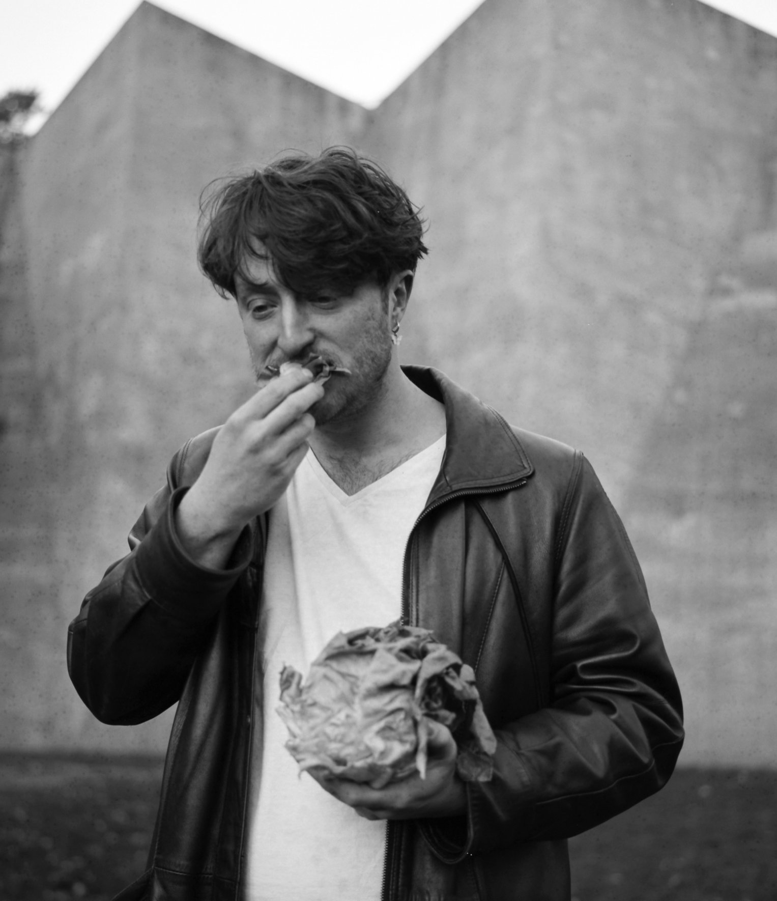

Dakota Wayne is a composer of conceptual and performative music whose work examines the social situation in and around sound.

© Martin Gatial
Dakota's work has been performed internationally at festivals, including ZeitRäume Basel [2021], impuls [2019,2023], Darmstädter Ferienkurse [2018], and SALT New Music Festival [2015]. He has worked with experienced ensembles in the field such as the kinnekt kollektiv, VanProject, Illinois Modern Ensemble, Purchase Contemporary Ensemble, as well as outstanding performers, Miranda Cuckson, Rebekkah Heller, Gunnhilldur Einarsdottir, Seth Josef, Ellen Fallowfield, Sanae Yoshida, Peyee Chen, Kalle Hakosalo, Mikolaj Rytowski, and Phoebe Bognar among others. Dakota’s work spans disciplines, as he has experience in installation and performance art as well as theater music. Originally from Albany, New York, Dakota has studied in the US and Europe, holding degrees from Purchase College, University of Illinois and the Kunstuniversität Graz. He is currently pursuing the Music and Research program at the Music Academy Basel.

© Martin Gatial